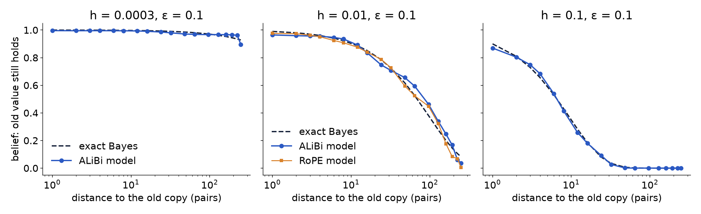

Follow-up 3 · why it works inside the band
The clock is right; recent copies are under-counted, by an amount that depends on h
Bayes adds two parts: log-odds(old : new) = time [ log(1 + sV/(1−s)), s = (1−h)G ] − evidence [ nw · log((1−ε)/ε) ]. We measured each part separately.

Time: one old copy, then the query. The model's belief that the value still holds matches Bayes in all 124 models (h 0.0003–0.15, ε 0.01–0.45, 3 encodings; median error ≤ 0.042), and switch gaps scale as h−0.93.

Evidence: one extra recent copy moves the switch point w× as far as in Bayes. ALiBi median: w ≈ 0.15 → 0.30 → 0.37 → 0.67 → 0.73 at h ≤ 0.001 → 0.003 → 0.01 → 0.03 → 0.06 (115 models, 2+ seeds each). RoPE is higher, ≈ 1 from h ≈ 0.01, but also falls at very low h (0.23 at h = 0.0003).
So the law is a summary, not a mechanism. A Bayes fit can only express w < 1 as a larger ε′ (and the early switch as h′ > h). Over the box we fitted on, w ≈ 0.25–0.65, and the law's ε′(ε) is that average. It holds where w stays near it and drifts where w moves. Why w grows with h: next slide.
17 / 19